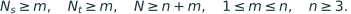
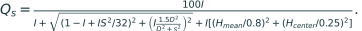

当前 DSTRUCT 直接 AC：标签、团队身份与容量验收
核心结果
旧 TARGET 库可以部分合法复用，不应整体改名，也不需要整体废弃。 本轮逐事件、逐人员块核对了 52,544 条 TARGET_DSTRUCT_K3 历史方法事件、65,058 条设计链接和 60,483 支相关物理团队。其中 28,420 个不同物理 A/C 对符合当前 DSTRUCT 的直接替换定义，涉及 45,162 支不同团队；原成员、目标、参考与团队键的身份检查全部通过。
主目标的合法存量为 26,809 个物理对、205 张图、22 栋建筑；其它已准入目标单列 1,611 个物理对、19 个目标池、17 张图、6 栋建筑。两域共享图片，不能把图数相加作为总体图数。总体去重为 206 张图。验收记录和逐事件完整审计保存精确分母。
这些是存量团队在当前标签下的条件分析。 即使某一历史事件现在仍合法，历史选块、整类抽样、背景配额和注册预算仍影响其出现机会。它不自动变成“按当前类别重新均匀抽样”的实验。
1. 版本和标签变化
正式来源为 main 提交 48a2fc6aedd51cd701b1bce06c02bd3ef92ec75b。当前标签取 research/data/releases/v2.1/admitted_space_extension/image_difficulty_20261030/classification/LABELS_ALL_LOBO.csv.gz；历史事件仍使用其原始注册身份及旧标签来源 personnel_ac_v21_20261030/stage00_intake/FINAL_LABELS_FOR_AC_ALL_LOBO.csv.gz。
在同一 K3 方法的 1,426 个人员×折行中，34 行类别发生变化。这 34 行全部属于目标建筑留出的 LOBO 折；ALL 描述折变化 0 行，known 资格没有变化。每个目标图使用其建筑对应的留出折，不使用 ALL 标签。全部标签交叉表、34 行变更清单及受影响事件成员可逐成员追踪。
历史容量池与第 08–12 批当前类别画像所覆盖的 274 个对应池，其人员集合、参考 ID 和参考版本均完全一致。本轮直接 AC 的正式容量域限于普通 Manual：206 个主目标池及 30 个其它已准入目标池；门洞、特殊范围和 Semi 未加入本轮研究。池身份核对与输入来源清单记录了这一关系。
2. 什么是当前合法直接 AC
每个比较从实际团队重新检查：
要求同图、同目标池、同参考和同评分条件，|A|=|C|=n、|X|=|Z|=m>0，且 D/X/Z 两两互不重叠。X、Z 各自必须属于一个已知的当前 LOBO 类别，二者类别不同。团队成员必须仍在相应冻结候选池中，成员原答 ID、原生团队键和物理对身份也逐条匹配。
D 可以混类，也可以包含当前未知类别人员。 本轮保留了 16,364 个混类 D 的合法事件，以及 152 个 D 中含未知标签的合法事件；后者与前者可有交集。D 的具体人员、当前 C1/C2/C3/unknown 人数与名单均保存于逐事件表。D=空 的 2,390 个合法物理对单列，不把它们描述为存在共同背景的比较。
3. 旧事件保留、排除和映射
52,544 个旧事件中，15,473 个本来就不是等人数替换，例如整类数量变化、加入剩余成员或不同人数的联盟比较；这些保持历史身份，不进入本轮固定 n 直接 AC。其余 37,071 个等人数事件中，37,068 个在原标签下是纯跨类替换，另 3 个本来是混类别组合。前者有 8,648 个在当前标签下变成混合来源块、混合目标块或同一当前类别，因而不能继续作为当前纯跨类直接 AC。
| 合法存量的当前方向 | 主目标物理对 | 其它已准入目标物理对 |
|---|---|---|
| C1→C2 | 8,750 | 560 |
| C1→C3 | 7,993 | 265 |
| C2→C3 | 10,066 | 786 |
这些方向沿用各历史事件登记的 A/C 方向。反向视图通过同一个物理对调 A/C 得到，支持数相同，有符号差值必然取反；这不是另一份独立抽样证据。
43 个仍合法但当前方向改变的旧事件得到保留。 其中原 C1→C3 的 7 个现在是 C1→C2，36 个现在是 C2→C3。原 source_class/target_class/event_id 不改写，当前映射写入独立 current_* 字段。没有把它们简单删除，也没有直接覆盖旧身份。
完整核查分两层：通用当前 AC 合法性，以及旧特定设计的要求是否仍成立。例如旧“整类换入”可能不再覆盖当前整类；旧 outside_swapped_classes 的 D 可能进入当前被替换类别；旧中性配额或富集背景的类别计数也可能改变。这些情况下，通用直接 AC 仍可合法，但不能继续使用原特定设计名称作当前含义的断言。
28,420 个合法事件中，23,358 个至少有一条旧特定设计链接仍满足相应当前成员条件，5,062 个只保留通用当前 AC 解释。后者没有从主通用 AC 清单剔除。旧中性配额的检查仅核对配额规则在当前标签下的类别计数，不声称恢复了当前分类下的随机抽样分布。继承严格 ABC 的共同背景不额外套用中性配额条件。
逐条件来源和原因见：
4. AC 容量与需要补齐的范围
令候选池有 N 人，换出类和换入类分别有 N_s、N_t 人。允许一般混合背景时，直接 AC 的可行条件是：

其中候选池至少容纳 (n−m)+m+m=n+m 个不同人员。50% 替换时 n=2m，因此总池要求是 N≥3m。这里没有严格 ABC 所需的第二块同类人员 Y，不能把其容量条件套在直接 AC 上。
| 主目标类别对，正反方向共享容量 | 14/7 可行图／旧合法覆盖图 | 20/7 可行图／旧合法覆盖图 | 最大可行 50% 预算 |
|---|---|---|---|
| C1↔C2 | 44／39 | 44／39 | 20/10：1 图 |
| C1↔C3 | 7／4 | 7／4 | 14/7：7 图；16/8 已无容量 |
| C2↔C3 | 84／81 | 84／81 | 16/8：12 图；18/9 已无容量 |
缺口是相同的 7 张图、11 个池×类别对，在两个既有核心预算上共 22 个格。本轮只对这些未覆盖格补充直接 AC；没有为了补齐其它 n/m 网格扩大实验。逐图完整六方向容量包括已实际登记过的等 n/m 预算与预先列出的关键预算，保留不可行原因与零支持格；关键预算表便于阅读。
容量表中的 possible_XZ_blocks 与 possible_D_per_XZ 是有限候选池内的组合数量，不是已执行团队数，也不是独立统计样本数。反向容量行共享同一个物理支持集合。
5. 第 12 批严格 ABC 的直接腿复用
第 12 批已有 3,200 个当前 C1↔C3 严格 ABC 事件。A/C 和 B/C 都是合法的直接替换腿，本轮逐腿重新验证当前成员身份，得到 6,400 条来源别名，但去重后只有 4,096 个不同物理 A/C 对。这些腿保留 source_event_id/source_leg/study/bundle_id/background_id，仍属于原严格 ABC 设计所选的存量团队。
这些腿与旧 TARGET 合法物理对没有重叠；两者共 32,516 个可复用物理对。统计时先按 canonical_physical_pair_id 去重，再选择方向。不得将 6,400 条腿别名、两次方向展示或多个设计链接作为独立观测反复计权。文件见批 12 腿审计、复用别名总表和去重物理对总表。
6. 补充设计的独立验收
补充随机种子在计算端点结果前固定为 202611041301。每个缺口格最多选择 16 个不同 X/Z 块组合；组合空间较小时全部枚举，再将 32 个物理对预算等分到已选 X/Z 块上，在剩余人员中抽取不同 D。D 允许混类；未按照 Q、劳动、GT 坐标、输出状态或预期方向选择人员。
独立复现得到完全相同的 704 个物理对和 1,408 支团队。实际 22 格中：16 格为 16 个块×2 个 D；4 格为 8 个块×4 个 D；2 格为 1 个块×32 个 D。所有格的块权重相等，没有重复 X/Z 来伪装更多块。7 个选择池的完整内容与冻结来源相同，当前楼外标签、原答身份、参考、成员集合及不重叠条件均通过。
加入补充登记后，14/7 和 20/7 在 C1↔C2、C1↔C3、C2↔C3 上分别覆盖全部 44、7、84 张可行图。这是注册覆盖完成；共同可评 Q 支持仍由实际端点状态决定。 本设计验收不打开端点评分结果，也不将失败端点填零。独立验收、22 格逐格随机重建、补充后注册覆盖可复核。
7. 运行与字段使用
在仓库根目录执行：
python research/workers/current_dstruct_ac_final_20261104/audit/build_event_registry.py
python research/workers/current_dstruct_ac_final_20261104/audit/review_supplement_design.py
python research/workers/current_dstruct_ac_final_20261104/audit/review_pair_dataset_and_means.py
python research/workers/current_dstruct_ac_final_20261104/audit/review_score_formula_and_components.py
python research/workers/current_dstruct_ac_final_20261104/audit/compare_formal_summary.py
运行依赖 Python、pandas 与 numpy；来源是同一固定 main 及已接入的第 08–12 批。第一条重做标签、登记和容量审计，不调用融合或评分；第二条只验证已冻结的补充设计，不覆盖其注册文件。后三条在主统计和补充端点表已存在时执行，分别核查底表与分层点估计、已有标量分项的评分公式与重复引用，以及最终六方向汇总。supplement/design.py 已设有冻结文件存在时禁止覆盖的保护。
下游通常读取 LEGAL_CURRENT_AC_EVENTS.csv.gz 的 current_source_class/current_target_class/current_n/current_m，保留原 event_id/A_team_key/C_team_key 连接历史指标。orientation_sign 表示原 A/C 相对当前规范类别顺序的方向；canonical_A_team_key/canonical_C_team_key 用于不同来源的统一物理对去重。若按原背景方案分层，读取 LEGAL_CURRENT_AC_DESIGN_LINKS.csv.gz，但先在选定方案内去重事件，不能把一对多链接直接合并后平均。
不能由“合法 AC”或“注册覆盖”直接推断可评分状态。以下为在设计冻结后追加的数值验收；图内、图间规律及几何解释由主统计和机制模块报告。
8. 独立数值和重复引用验收
在补充设计冻结后，本模块从原始标量源重新连接每支团队，而非导入主统计模块的建表函数。最终 35,524 条方法／腿别名对应 33,220 个不同物理对；43 个当前方向改变的旧事件完整进入当前正确方向，严格 ABC 的反向腿和同一端点的重复引用没有增加样本。
直接按原始团队键取 Q，再按已批准的 57 组人工顺序的图、成员、条件和参考完整身份接入辅助版，得到与主底表一致的数值，最大浮点差为 3.56e−15。原自动共同可评为 32,086 对；已有人工辅助接入后为 32,127 对，新增 41 对。这是 7 个新增可评唯一端点通过重复消费者形成的共同支持扩展，不能写成 41 个新端点，也不能将旧无 Q 当作零分来计算改善。64 个合法物理对触及已批准端点，其中并非每对都获得双方可评。原共同支持上的 Q_A、Q_C 和差值逐值保持。逐对数据独立验收
评分口径另从存储分项独立重组。令 I=iou_2d、S=S_bottom_deg、D=dir，则：

s=8 对应 B8L2，s=10 对应 D10；I=0 时按既有定义取 0。这与“缺失 Q 填零”无关，前者是已有合法输出的评分定义，后者在本轮始终禁止。
| 独立评分核查范围 | 唯一端点 | 有 Q 且分项完整、可重组的端点 |
|---|---|---|
| 全部旧 TARGET 原始源，包括本轮未采用的历史设计 | 60,483 | 59,433 |
| 当前全部物理对的自动端点 | 51,562 | 50,605 |
| 当前全部物理对的既有人工辅助端点 | 51,562 | 50,612 |
| 第 12 批原生端点源 | 4,992 | 4,898 |
| 本轮容量补充原生端点源 | 1,408 | 1,388 |
| 已批准人工顺序端点源 | 57 | 56 |
以上范围互有重叠，不相加。全部有 Q 端点均有重组所需的分项；B8L2 与 D10 最大重组残差均不超过 5.69e−14。26 个 Q／几何／阈值字段在旧完整源、当前自动和当前辅助三层中的重复团队引用一致，共 78 项检查，数值差最大为 0，缺失性冲突为 0。验收没有调用融合、修改源分数或增加人工连接。评分与分项验收、来源汇总、逐端点残差、重复分项一致性
补充格的正式均值遵守冻结的两阶段规则：先在同一 X/Z 块内平均可用 D，再对 X/Z 块等权，最后汇总目标池、图片和建筑。缺失 Q 后，各块的有效 D 数可能不同，不能悄悄退回“剩余物理对一律等权”。历史存量维持条件分析的物理对等权。独立均值表分别列出图等权与建筑等权，原共同、人工辅助新增共同及扩展共同支持也分别保存：全部独立均值、核心预算独立均值。
9. 最终汇总与六方向验收
正式六方向表共有 4,200 行，其中有 Q 支持的规范正向条件为 1,586 行。本模块分别重建这些条件的图等权、建筑等权、有符号和绝对差值，以及正向、负向、变化不超过 1 分的图片数；与正式汇总在浮点精度内逐值一致，点估计最大误差为 3.56e−15。缺少共同 Q 的行保持空均值，未被填零。
六方向的 2,100 组正反向条件逐项满足预期恒等式：有符号均值取反、区间上下界取反互换、改善和下降图片数互换，支持数与绝对差值保持。最终自动和辅助物理底表的 current_source_class/current_target_class/current_direction 均指向实际规范 A/C 方向，原登记方向保存在 registered_current_* 与别名表中，不再混用两种方向。
本模块独立重算分层点估计，未重新模拟建筑簇 bootstrap；区间验收检查反向恒等式，以及完全相同的原共同支持在自动／辅助版本间复用同一重抽样结果后区间是否逐值保持。另有 514 个原共同和扩展共同的支持完全相同的条件，也通过点估计及区间恒等式检查。最终共 45 项比较通过，异常 0 项。具体通过状态和被验收统计源的 SHA-256 以最终正式汇总验收为准；逐检查结果和异常清单保留机器可读记录。
10. 工作台数据与 Windows 运行
工作台的 4,200 行汇总、12,484 行逐图结果和 3,292 行分层结果已逐单元核对冻结 CSV；HTML 中的缺失值保持为 JSON null。执行交付 HTML 的实际 JavaScript 后，全部 4,200 个方向／条件视图的图数、楼数、物理对数、均值与正负图片数一致。反向视图同时反号 ΔQ 并交换 Q(A)/Q(C)，平均绝对变化不变；真实 0 与缺失值分开显示，反向的缺失哨兵也没有被 JavaScript 一元负号变为 0。
840 个分层视图使用与所选预算、域、来源及版本一致的数据；辅助原共同和新增共同口径下的分层显示被明确抑制，共检查 840 次，避免把完整共同支持的分层接到另一分母。全部数据只有 manual 一种条件，当前 UI 不会混入其它条件。以上是数据与实际 JavaScript 逻辑验收，不宣称浏览器视觉布局测试。工作台验收
所有审计脚本从自身文件位置定位仓库根目录，不依赖临时工作目录、FILE_INDEX、下载助手或任何绝对本地路径。将交付内容按原相对目录合并到完整的 D:/Work/HOHONET 后，直接从仓库根目录运行即可。现有 main／第 08–12 批来源应已在原路径中；审计脚本不会代为联网获取缺失源文件。文本读写显式采用 UTF-8，Windows 也可使用下面的 UTF-8 模式命令：
cd D:/Work/HOHONET
python -X utf8 research/workers/current_dstruct_ac_final_20261104/audit/build_event_registry.py
python -X utf8 research/workers/current_dstruct_ac_final_20261104/audit/review_supplement_design.py
python -X utf8 research/workers/current_dstruct_ac_final_20261104/audit/review_pair_dataset_and_means.py
python -X utf8 research/workers/current_dstruct_ac_final_20261104/audit/review_score_formula_and_components.py
python -X utf8 research/workers/current_dstruct_ac_final_20261104/audit/compare_formal_summary.py
python -X utf8 research/workers/current_dstruct_ac_final_20261104/audit/review_workbench_data.py
前五个脚本使用 Python、pandas 与 numpy。最后一个工作台逻辑验收还需 node 在 PATH 中，本次执行版本为 Node.js v24.22.1；对应 CommonJS 脚本随包保存在 workbench_vm_review.cjs，不受仓库 JavaScript 包类型设置影响。查看离线 HTML 本身不需要 Node。已算补充对上的背景变化分析见 background/README_ZH.md，不新增团队或融合运行。